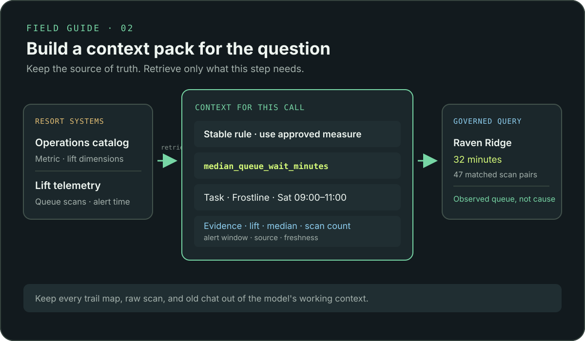

At Frostline Mountain, an operations lead asks the analytics agent:
“Which lift had the longest queue in the two hours after Saturday’s 9 a.m. powder alert?”
The agent has access to lift telemetry, an operations metric catalog, alert records, and a long conversation history. It answers: “Raven Ridge, 32 minutes.” That sounds useful—but did it use measured queue time, the resort app’s estimated wait, or even the chair’s ride duration? A stale note from a different report could make the right-looking answer refer to the wrong measurement.
Adding every lift, trail, event, and past conversation to the system prompt will not fix this. It may make the conflict harder to spot. The better question is: what does the agent need for this step, and where should it get that information?
This is the second article in a practical field guide to trustworthy analytics agents. Field guide 01 defines the contract behind a metric. This article is about selecting the right parts of that contract, relevant evidence, and conversation state for each model call. The resort and data below are illustrative.
The context window is a workbench, not the warehouse
“Context” is often used as shorthand for “the prompt.” In practice, the model may receive much more than an instruction: tool descriptions, the user’s question, retrieved documentation, previous messages, and results returned by earlier tool calls.
That assembled input is the model’s working context for a particular call. It is not the warehouse, a durable memory store, or an access-control system. Those belong in the application and its systems of record. The application decides what information to retrieve and what tools the model may request.
Imagine a mechanic’s workbench. The garage may contain a thousand tools and manuals, but the mechanic lays out the parts and instructions needed for the repair in front of them. Putting every tool on the bench does not make the repair better; it can make the right tool harder to find.
An analytics agent needs the same kind of curation. The goal is not to make every prompt tiny. It is to give each step enough authoritative, relevant context to do its job—and not confuse that with a copy of the entire data estate.

What belongs in the context pack?
For Frostline Mountain, the question is about queue time after a specific alert. The agent does not need every lift, trail, and sensor definition. It needs enough context to identify the approved measure, use the correct time window, request a valid lift breakdown, and explain what the results do—and do not—show.
| Context layer | Include for this question | Keep elsewhere |
|---|---|---|
| Stable instructions | Use approved operations metrics; show the measure and time window; do not claim a cause from a queue comparison alone. | Long lists of resort-specific exceptions that can be retrieved when relevant. |
| Task details | Frostline Mountain, the two hours after Saturday’s alert, and the clarified meaning of “queue.” | Unrelated conversation turns and assumptions from prior reports. |
| Authoritative meaning | The current median_queue_wait_minutes definition, timestamp rules, and approved lift breakdown. |
Every metric, trail map, and sensor schema in the resort. |
| Evidence | The lift-level result, matched scan counts, time window, freshness, and source or query reference. | Raw scans and logs not needed to answer this question. |
| Conversation state | A short, scoped record of a decision that still matters in this conversation. | Guessed preferences or old clarifications treated as permanent business rules. |
This separation matters. The metric contract remains the source of truth; the agent receives the relevant definition as evidence for a specific task. A conversation summary can help preserve what the operations lead asked, but it should not silently replace the approved definition.
Tool descriptions also consume part of the model's working context. Give the agent a small, distinct set of tools with clear purposes and inputs. A metadata-search tool can find the metric; a governed query tool can execute an approved request. Returning a compact definition or result is usually more useful than returning a long dump of every candidate model.
Assemble context just in time
Here is one reasonable sequence for the Frostline question:
- Resolve the task. Interpret “longest queue” as wait duration, not chair speed, and resolve “after the alert” to the exact two-hour window. If the lead had asked only for the “slowest lift,” clarify which measure they mean.
- Look up the approved definition. Retrieve
median_queue_wait_minutes, how its start and end are measured, its version, and whether it can be grouped by lift. - Request only the needed slice. Ask the governed query service for the specified two-hour window and lift breakdown—not a season of raw scan events.
- Return a compact, traceable result. Include the exact timestamps, measure, matched scan counts, freshness, and source or query reference.
- Explain within the evidence. Name the lift with the highest observed median; distinguish that observation from an explanation of why the line formed.
Suppose the approved query returns this illustrative result:
| Lift | Median queue wait | Matched scan pairs |
|---|---|---|
| Raven Ridge | 32 minutes | 47 |
| Juniper Chair | 18 minutes | 56 |
| Marmot Express | 12 minutes | 41 |
The answer can say Raven Ridge had the highest observed median queue wait: 32 minutes across 47 matched scan pairs. The data does not show why the wait was longer. Wind holds, lift capacity, staffing, or a burst of arrivals might be relevant, but those are hypotheses until the agent retrieves and checks the corresponding evidence.
An illustrative tool result might look like this. The fields are an example, not a vendor-specific schema:
{
"metric": "median_queue_wait_minutes",
"definition_version": "operations-v3",
"definition": "Median minutes from first queue scan to lift scan",
"source": "lift_queue_telemetry",
"window": {
"start": "2026-11-14T09:00:00-07:00",
"end": "2026-11-14T11:00:00-07:00",
"timezone": "America/Denver"
},
"filters": {"resort": "Frostline Mountain"},
"breakdown": [
{"lift": "Raven Ridge", "median_minutes": 32, "matched_scan_pairs": 47},
{"lift": "Juniper Chair", "median_minutes": 18, "matched_scan_pairs": 56},
{"lift": "Marmot Express", "median_minutes": 12, "matched_scan_pairs": 41}
],
"data_updated_at": "2026-11-14T11:20:00-07:00"
}
The application should supply the actual event boundaries and provenance rather than asking the model to infer them from “after the alert.” A concise, structured result gives the model less irrelevant material to sift through and gives the reader more of the context needed to check the answer.
Keep durable knowledge out of chat history
Not every fact has the same lifetime or authority:
- Business definitions belong in a reviewed semantic model or catalog.
- Permissions belong in the application and data platform, enforced at query time.
- Current query results belong to the query response, with their filters and freshness.
- A user clarification may belong in the current task or session, with its scope made explicit.
- A durable personal preference should be saved only if the product intentionally supports it and the user understands that behavior.
For example, “For this question, use the two hours after the 9 a.m. alert” is useful task state. It should not become a resort-wide default for every report. The definition of median_queue_wait_minutes belongs in the metric catalog, not in an old conversation about lift speed.
When a conversation gets long, a summary can carry forward the goal, decisions, unresolved questions, and references needed to continue. Treat that summary as a map, not the territory: reload the canonical metric definition and query fresh data rather than relying on a paraphrase or an old result. Summarization can lose details, so test what must survive and what can be fetched again.
When to retrieve, and when to keep something ready
There is a trade-off between retrieving everything up front and discovering information as the task unfolds.
Keep a small set of stable instructions and tool descriptions ready on each call. Retrieve detailed metric definitions, schema information, or documentation only when the question needs them. If a candidate lookup returns several plausible metrics, show the alternatives or ask; do not choose one just because it appeared first.
Just-in-time retrieval can reduce irrelevant context, but it adds tool calls and latency and depends on good search and tool design. A hybrid often works well: keep a brief rule and a metric-search tool available, then retrieve the full definition only after identifying a candidate. The right boundary depends on how dynamic the source is, how costly a wrong choice would be, and how reliably the agent can find the needed information.
Prompt caching is a separate optimization. Current OpenAI and Anthropic documentation describes caching repeated prompt prefixes in supported APIs. That can reduce repeated processing under the documented conditions; it does not make stale or irrelevant context useful, and cache behavior and pricing are provider-specific. Measure actual input tokens, cache reads, latency, and cost for your workload.
Test context selection, not just the final answer
A correct answer on one happy-path question does not prove that context assembly is reliable. Test the steps that supply the answer:
- Coverage: Did the model receive the current metric definition, time boundaries, and necessary filters?
- Relevance: Did retrieval leave unrelated metrics, stale notes, and unused schemas out?
- Authority and freshness: Did it use the approved definition and a sufficiently current result?
- Ambiguity: When two definitions or periods are plausible, does it ask or expose the choice rather than silently guessing?
- Evidence: Can the answer be traced to the query result, filters, and source used?
- Boundaries: Does the application enforce permissions even if user text, retrieved documents, or tool output ask for something else?
- Efficiency: How many input and output tokens, tool calls, and seconds does the answer require? Does caching actually help repeated prefixes?
Use questions that are clear, ambiguous, unsupported, and near time boundaries. Include cases where the needed context is absent or outdated. Log enough to diagnose which context was retrieved and what the model received, while respecting your data-handling and retention requirements.
Do not treat authorization as another prompt paragraph. A model can request a query; the application must validate that request and execute it under the intended user's permissions. Retrieved content and query results are evidence to reason about, not a replacement for server-side controls.
Takeaways
- Context is more than the system prompt. It includes the tools, question, retrieved material, conversation, and tool results available to a model call.
- Keep source-of-truth data outside the prompt. Retrieve the approved definition and current evidence needed for the task.
- Use progressive disclosure. Start with a small, clear toolset and fetch detailed context when the question requires it.
- Keep memory scoped and inspectable. Carry forward decisions and references, not guesses or stale query results.
- Evaluate the context pipeline. Test relevance, authority, freshness, ambiguity, evidence, permissions, and measured cost—not only the final prose.
Sources and version notes
Checked on 16 November 2026. Context, model, and API behavior varies by provider and changes over time; verify the documentation for the product and version you deploy.
- Effective context engineering for AI agents — context as the full set of information available to a model, tool design, just-in-time retrieval, and long-running task state.
- OpenAI function calling — tool calls are requests handled by the application, which returns tool outputs to the model.
- OpenAI conversation state and compaction — ways to carry state across turns and reduce context for long-running interactions.
- OpenAI prompt caching and Anthropic prompt caching — provider-specific behavior for reusing prompt prefixes.
- dbt MCP server — one example of exposing dbt-managed metadata and query capabilities to AI applications; available tools depend on setup and access.
The warehouse is where the knowledge lives. The context pack is what the agent needs on the workbench right now. Give it enough to do the next step well—and a reliable way to fetch more when it needs it.